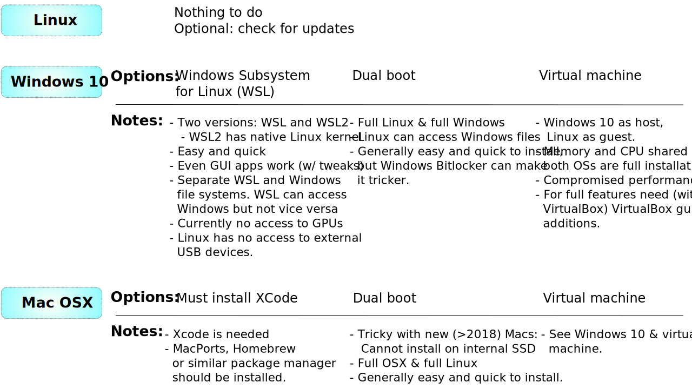

%%html
<style>
code.lblue{
color: #1371a9;
}
pre,
code.wlblue{
color: #1371a9;
background-color: white;
}
code.com{
color: #f603ed;
}
b.lblue{
color: #1371a9;
}
div.int{
margin-left: 40px;
}
div.red{
margin-left: 10px;
border: 1px solid red;
padding: 10px;
}
div.clblue{
margin-left: 10px;
border: 1px solid #1371a9;
padding: 10px;
}
div.try{
margin-left: 10px;
border: 1px solid #1371a9;
padding: 10px;
}
div.info{
margin-left: 10px;
border: 1px solid #1371a9;
padding: 10px;
}
table.lblue{
margin-left: 2px;
border: 1px solid #1371a9;
padding: 10px;
}
</style>
Lecture X¶
Learning goals:
Have an overview of some of the requirements for your personal computational environment.
Assess what you need to do the get the command line terminal and Linux/Unix tools
Learn how to install OS.
Optional: How to use a live Linux distribution. For that, an empty USB key is needed (8GB recommended).
Keywords: Dual boot, Linux, WSL, WSL2, OSX, virtual machine, backup, live distribution
Associated material:
What we are going to do:¶
Independent of the operating system:
We need to set up command line terminal and it will be used extensively throughout the course
All of them are Linux (well… technically the OSX one is based on Free BSD but that doesn’t make any practical difference here).
This is what we will do:
Set up command line terminal either by installing full Linux, WSL/WSL2 in Windows or Linux in a virtual machine. A decision needs to be made and we discuss these options below.
Learn the basics of command line and the main differences between Linux, Windows and/or Mac.
In this course we need Gromacs, VMD, Python and Jupyter Lab/Notebook:
They have pre-requisites and we need to install them first. This includes software such as a C/C++-compiler, Xcode for OSX users, cmake, and so on. -After the prerequisites have been installed, we install Gromacs, VMD, Python and Jupyter.
|  |
| Figure. The three main operating systems and the main options. |
Pre-installation decisions¶
What is your operating system and what you need to do (if anything):
The listing below should help to choose as what to do. Main requirements and limitations are listed.
If you have pure Linux or dual boot: You are good to go, no need to do anything at this time (…you can check that your system is up-to-date).
If you have Mac OSX: OSX is based on Free BSD (Unix) and it has a command line terminal. Nothing needs to be done at this time. Optionally, you can install Linux in a virtual machine.
If you have Windows: There are different options to choose from:
You can install dual boot. In that case you will have both Linux and Windows installed and you select at boot time which one you want to use. This works independent of which version of Windows you have, but you must have enough free space on your hard drive
If you have enough disk space, this is a very clean and efficient option.
I strongly recommend not to do this if you have Microsoft Surface. While not impossible, there are reports that the process is not necessarily straightforward.
On my personal computers, setting up dual boot is my usual approach and I have had no problems on various versions of Lenovo, Samsung, Dell, HP, Alienware, and custom computers.
You can install WSL/WSL2. This provides you with a Linux installation with command line tools. Important: For WSL, you must have Windows 10, for WSL2 the only the following Windows 10 versions are compatible: version 2004 (May 2020), version 1909 (Nov. 2019) and version 1903 (May 2019).
Installation of WSL is straightforward and WSL is supported by Microsoft. WSL gives a CLI but no GUI. In practise you will have Windows and Linux on your system running at the same time. Linux does have access to your files on the Windows side but Windows has no access to the files on the Linux side. All Linux CLI tools work well.
GPU computing: WSL has no access to the GPU(s) so GPU computing from the Linux terminal is not possible.
You can install Linux in a virtual machine inside your Windows. This works with all recent versions of Windows.
This requires that the computer must have enough RAM. In practise, one should have at least 16 Gb since the RAM has to be divided between Windows and Linux.
Linux inside a virtual machine is full Linux with GUI as well as CLI.
GPU computing: Virtual machine has no access to the GPU(s).
Important: The responsibility is yours. When you install any software the responsibility is entirely yours. This is particularly important in the case you have a Windows computer and you have to select between the different options. It is important to you back up your data and essential files. Doing that ensures that in the case something goes wrong, you will be able to recover your previous work and software. While it is rare that something goes wrong, one should take the necessary precautions. Recovering a crippled computer may be very hard or impossible.
Which version/distribution of Linux should I install?¶
There are a lot of great Linux distributions to choose from. Here, instructions are given for Ubuntu-based systems. It is by no means the only choice.
Recommendation regarding distribution: The instructions in this document are for Ubuntu-based distributions to keep things simple. If you have not used Linux before, then the easiest way is use one of the Ubuntu based ones. There are many other excellent distributions and you can typically try them without installinf by simply making a Live USB (see below).
Recommendation regarding Ubuntu version: It is strongly recommended to install an LTS (Long Term Support) version. At this time (fall 2020), the latest LTS version is 20.04 LTS. The instructions below have been tested with this particular version (as well as to some degree using 18.04 LTS). Why LTS and not the absolute latest? Ubuntu releases come in 6 month cycles (April and October), but the LTS versions are released every two years. Importantly, the LTS versions are supported and maintaned for five years. In other words it is a stable solution without the need to upgrade.
Recommendation regarding Ubuntu flavor: There are a lot of excellent choices and ultimately it depends what you like / what seems visually the most appealing to you.
Which distribution/version/flavor you use? Right now, our student office computers run the default Ubuntu, my 2007 iMac runs Ubuntu Budgie and my laptop runs KDE Neon. All of the computers run LTS versions of Ubuntu (mostly 18.04 LTS and 20.04 LTS). I have used Linux since 1993 and tried many distributions including Slackware, Redhat/Fedore, SuSe, Gentoo, Arc, Elementary OS and so on.
Try it first using Live USB without installing. This allows you try it out without installing. This is important since this weay you can see that Wifi and other devices work properly and also check that you like the interface. Here are the basic steps (the suggestions below are Ubuntu or Ubuntu-based for ease):
To make a Live USB you need a USB pen, larger than 4GB is recommended (and often needed). If you want to try several distributions/flavors at the same time, just have 2 or more pens ready. Note that the USB pen needs to be erased (and formatted) in the process so make sure that if it isn’t empty, you copy all the important files to another USB/SD/HD/SSD.
Take a look and browse at the web pages of the different flavors/distributions and see what pleases you visually. Functionally, they all contain the same features.
Suggestions:
-
Note: Pick Ubuntu 20.04 LTS (20.04.01 LTS at the time of writing this), NOT any of the newer ones.
-
For those coming from Windows or Mac, Ubuntu Budgie may be the most familiar looking. Simply take a look at their respective pages and see what pleases you visually.
-
Uses Ubuntu/Debian package management.
Beautiful Mac-like user interface design
-
Uses Ubuntu/Debian package management.
Beautiful Windows-like design
Once you have made your choice, download the one(s) you want. The files that you download are so-called ISO images. It is a standard archive format that we use to create a bootable USB. Note that the ISO images can be large, anything between 1 and 4 GB.
Create a bootable USB. The links below contain step-by-step instructions and work for all of the above Linux flavours/versions.
Now you can try it out. Simply insert the USB and reboot your computer.
Potential problems:
The computer boots back to Windows (or Mac). This means that USB is not recognized as a boot device. This is easy to change:
Reboot the computer and enter bios. How this is done depends on bit on your computer. When you reboot, many computers usually show (for a few seconds) what are the keys to press to enter bios. This depends on your computer, but here are a few examples:
The two most common keys to hold down while booting are F10 and F12.
Dell XPS 13:
Lenovo:
Not here? Then you have to search the web. It is good to know this since if there evere is a serious problem with your Windows, you may need this to be able to recover your computer and OS.
Once in bios, go into the boot menu and change the order of bootable devices such that USB comes first. Save and reboot. Now (provided the USB is inserted), the computer should boot to Linux.
Now you should be running Linux from the USB. Try it out, connect the Wifi, open software from the menus and see that everything works as expected. If everything is fine and you like the visual features, then all is good. Let’s not install yet before discussing a few issues. So select reboot from the menu, and remove the USB when requested.
If you want to try another distribution/flavour, just repeat the steps.
Linux installation¶
Now that you have tested at least one Linux distribution from a USB, it is time to install. There are four possible choices depending what you want. Each has their own advantages and disadvantages:
Requirements:
Linux is not very resource hungry. This means that if there is an older unused computer hanging around, it will probably run Linux just fine. Practical examples: I have installed Linux (Ubuntu Budgie 20.04 LTS) on an 2007 iMac with 8Gb memory and it runs fine. There are also special lightweight Linux versions that run perfectly well even on older netbooks (I have tried some versions on an old Toshiba netwook with 2 Gb of memory).
Advantages: Clean installation.
Disadvantages: If you need software that runs only on Mac or Windows.
Instructions: New computer came with windows pre-installed but you want Linux only
Dual boot. Allows you to select at boot time which OS you want to use.
Requirements:
You need to have enough strorage space depending on your needs. Examples: if one doesn’t need to store large files, a 256Gb SSD works just fine. Linux is less resource-hungry than Windows or Mac, so if your computer runs one of them, there should be no issues.
Advantages:
Windows and Linux are clearly separated each of them being a full native installation.
Disadvantages:
You need to boot to switch from Linux to Windows or vice versa (but then again, that is quick).
Some manufacturers ship Windows installed with BitLocker turned on. If that is the case, things become more complex as the HD/SSD tends to be fragmented and it is not necessearily trivial to defragment it.
Additional:
The Linux side can access the files on the Windows side but not vice versa.
Install Linux in a virtual machine inside your current OS.
Requirements: Since memory is shared between the two oprating systems when the virtual machine is turned on, one needs enough RAM. Typically 16 Gb seems to work fine, 12 Gb is ok and 8 Gb not quite enough.
Advantages:
Allows you to install full Linux (or other operating systems, including different versions) in a contained environment without need to repartition the hard drive/SSD.
Disadvantages:
As discussed above, memory shared between the two OSs when virtual machine is turned on. The practical lower limit for RAM is 12 Gb.
Virtual machine doesn’t allow access for GPUs (if you don’t have discrete GPU, then this is not an issue)
If running Windows 10, install Linux using WSL/WSL2 (WSL=Windows Subsystem for Linux). This is different from the three options below in that you don’t automatically get the GUI Linux tools, but just the command line terminal. It is possible to use GUI-based application as well, but for that one has to install an emulator for the X-windows environment.
Important: For WSL, you must have Windows 10 and for WSL2 the only the following Windows 10 versions are compatible: version 2004 (May 2020), version 1909 (Nov. 2019) and version 1903 (May 2019).
- Advantages: Installation of WSL is straightforward and WSL is supported by Microsoft. WSL gives a CLI but no GUI. In practise you will have Windows and Linux on your system running at the same time. Linux does have access to your files on the Windows side *but* Windows has no access to the files on the Linux side. All Linux CLI tools work well.
* GPU computing: WSL has no access to the GPU(s).
Windows: WSL/WSL2 vs dual boot vs virtual machine¶
OSX¶
Terminal application comes as standard (but lacks features; we will install them later).
In OSX it can be found at
Applications -> Utilities -> Terminal
Note: I don’t have access to a Mac -> no screenshots will be provided.
OSX: Macports / Homebrew¶
To install Gromacs, you need MacPorts or comparable. Homebrew is a good alternative.
Here is Introduction to MacPorts
Follow the detailed installation instructions at the MacPorts web site.
Here is a summary of the steps:
You must install Xcode from Apple. Xcode provides the compilers, libraries and other development tools
Apple’s Command Line Developer Tools
Install MacPorts for your version of OSX. There are several ways but the pkg installer as listed first at the MacPorts web site is the easiest way.
You should also install the X11 windowing environment. There are several options, but the xorg server as provided by MacPorts is probably the best and easiest choice.
For available software (ports), see “Available ports”